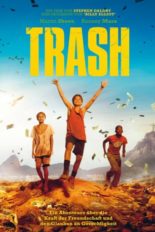

#4875 Trash
 
 IMDB-Wertung: 7.2 / 10
IMDB-Wertung: 7.2 / 10  Metascore: 0
Metascore: 0 
Die drei Straßenkinder Raphael (Rickson Tevez), Gardo (Eduardo Luis) and Ratte (Gabriel Weinstein) müssen ihr Überleben auf einer Müllkippe am Rande der Stadt sichern. Eines Tages findet einer von ihnen eine Geldbörse. Diese enthält etwas Geld, einen Ausweis, eine zusammengefaltete Karte und einen Schlüssel. Ein Polizeibeamter bietet den Kids eine Belohnung für den Beutel an - das lässt sie erkennen, dass mit den Sachen etwas nicht in Ordnung ist, worauf sie sich entschließen alles für sich zu behalten. Diese Entscheidung bringt sie in eine enorme Gefahr - bevor sie sich versehen, müssen sie lügen, stehlen und gegen korrupte Kräfte kämpfen. Die einzigen Personen, die ihnen dabei wirklich helfen wollen, sind der Geistliche Juilliard (Martin Sheen) und seine Helferin Olivia (Rooney Mara), zwei engagierte Menschen, die für mehr Menschlichkeit und Gerechtigkeit in den Slums kämpfen.
Jahr: 2014
Dauer: 113 Minuten
FSK: 12
Land: England Studio: UPITonspuren: DTS - ,
Untertitel: Deutsch,
Auflösung: 1080p (1920x816) Größe: 5601 MB
Genre: Thriller, Drama, Abenteuer, Krimi, Mystery
Regisseur:  Stephen Daldry, Christian Duurvoort
Stephen Daldry, Christian Duurvoort
Drehbuch: Catherine Storr
Soundtrack:
Darsteller:
 Wagner Moura als José Angelo
Wagner Moura als José Angelo- Selton Mello als Frederico
 Rooney Mara als Olivia
Rooney Mara als Olivia Martin Sheen als Father Juilliard
Martin Sheen als Father Juilliard- Jesuíta Barbosa als Turk
- Leandro Firmino als Thiago
- André Ramiro als Marco
- Nelson Xavier als Clemente, Jefferson
 Christiane Amanpour als Herself
Christiane Amanpour als Herself- Rickson Tevez als Raphael
- José Dumont als Carlos, Policeman
- Daniel Zettel als Carlos' partner
- Eduardo Luis als Gardo
- Luis Felipe da Silva Costa als Trash Kid No. 1
- Gabriel Dias da Costa Silva als Trash Kid No. 2
- Stepan Nercessian als Antonio Santos
- Teca Pereira als Graça
- Letícia Cunha Camara Pereira de Carvalho als Trash Kid No. 3
- Rafael de Biase als Trash Kid No. 4
- Israel Gomes als Raphael's cousin No. 1
- Kauan Faustino als Raphael's cousin No. 2
- Ana Carolina Faustino als Raphael's cousin No. 3
- Ewerton Victor de Oliveira als Raphael's cousin No. 4
- Jonathan Azevedo-Negueba als Dump Community Leader
- Conceiçáo Camarotti als Raphael's Aunt
- Gabriel Weinstein als Rato
- Ramon Francisco als Station Boy No. 1
- Felippo Lessa als Station Boy No. 2
- Moisés Gomes als Station Boy No. 3
- Maristela Guimaráes als Screaming Lady
- Deiwis Jamaica als Station Guard No. 1
- Marcos Antunes Alves Parente als Station Guard No. 2
- Charles Paraventi als Father Michael
- Luis Lobianco als Desk Sargeant
- Enrique Diaz als Mr. Sobral
- Gisele Fróes als Santos's wife
- Ulysses Ferraz als Businessman No. 1
- Magdale Alves als Angelina
- Adriano Garib als Fridge Truck Man
- Maria Eduarda de Carvalho als Pia
- Thiare Maia als Frederico's Wife
- Igor Costa de Oliveira als Frederico's Son No. 1
- Ismar Martins als Chase Policeman No. 1
- Dudu Farias als Chase Policeman No. 2
- Thais Botelho als Pretty Favela Girl
- Shirley Cruz als Pretty Favela Girl's Mother
- Júlio Andrade als Chico, The Kombi Driver
- Julio Silvério als Favela Community Guy
Datei: X:\2014(N-Z)\Trash (2014, FSK12, 1920x816).mkv seit 25.11.2016
Festplatte: HD 2013(I-Z)-2014(A-Z)
 Es gibt insgesamt 163 Filme in der Gruppe '2014(N-Z)'
Es gibt insgesamt 163 Filme in der Gruppe '2014(N-Z)'